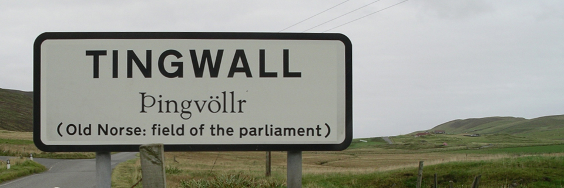
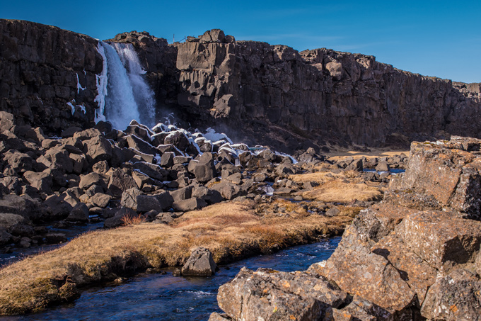
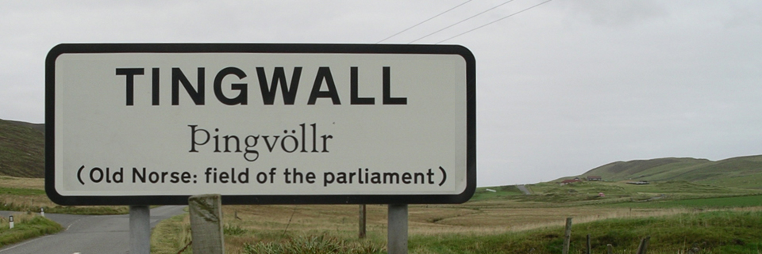
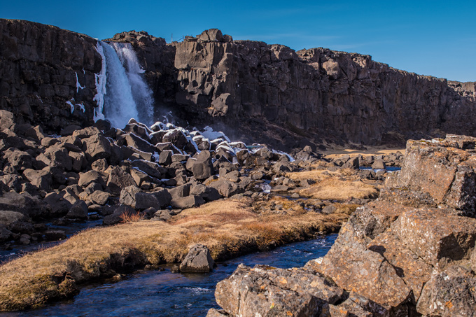

It is said when you walk in this park, you walk between two continents. Pingvellir National Park is on the Mid-Atlantic rift. This rift is between Eurasia and North America. Historically, Pingvellir was were Norse government was started. It was a middle ground where different tribes could get together and settle problems they had. This park has many experiences to offer. There is something for everyone.


  
 